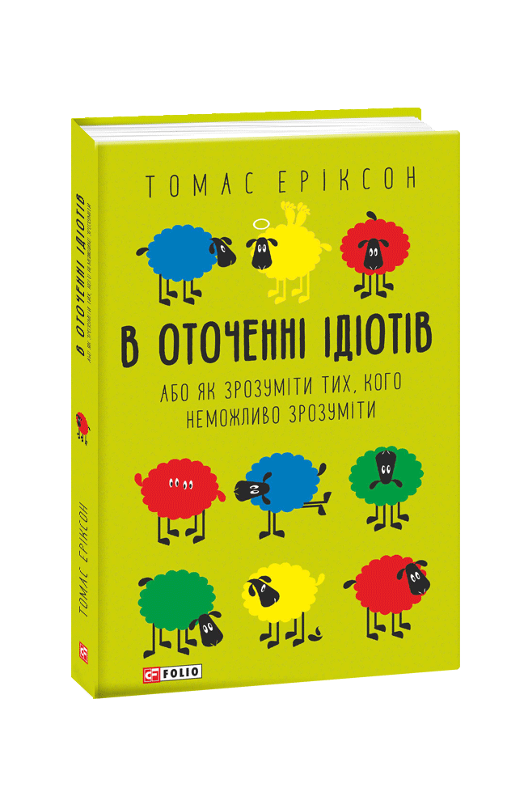
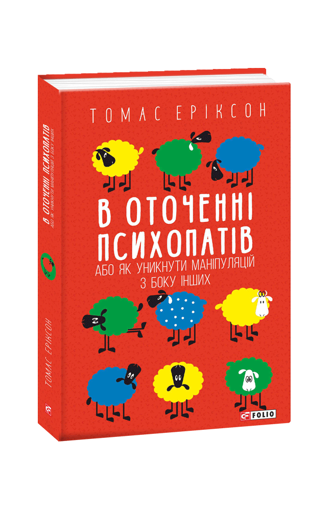
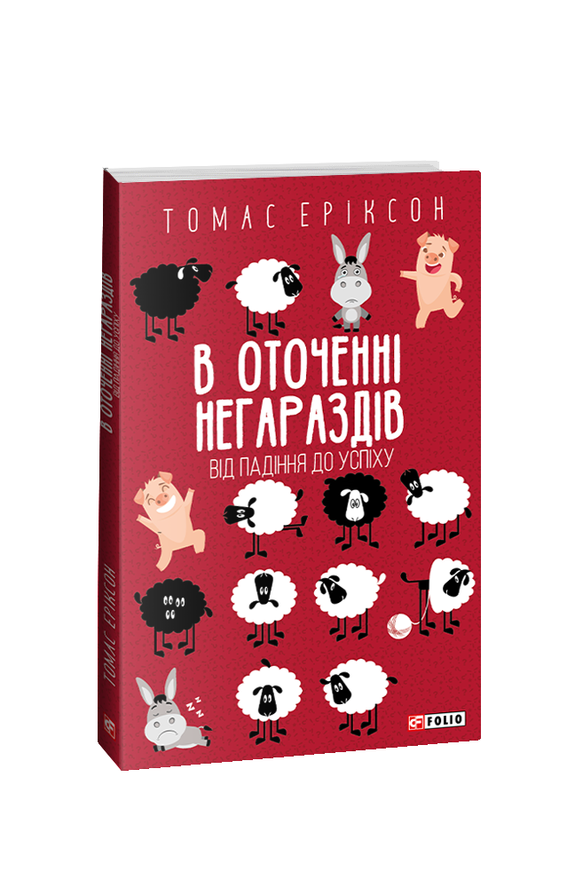
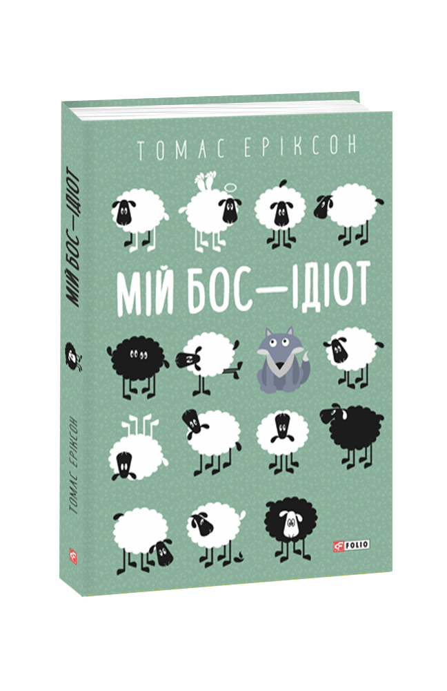
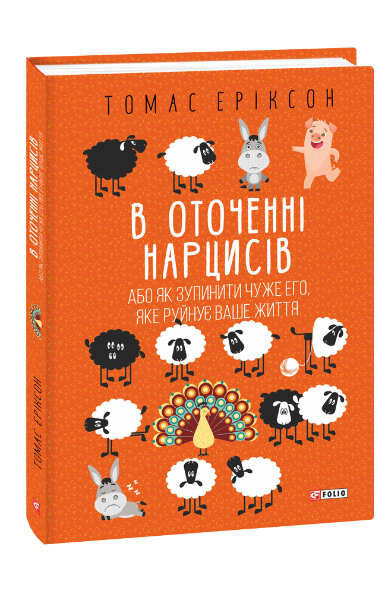
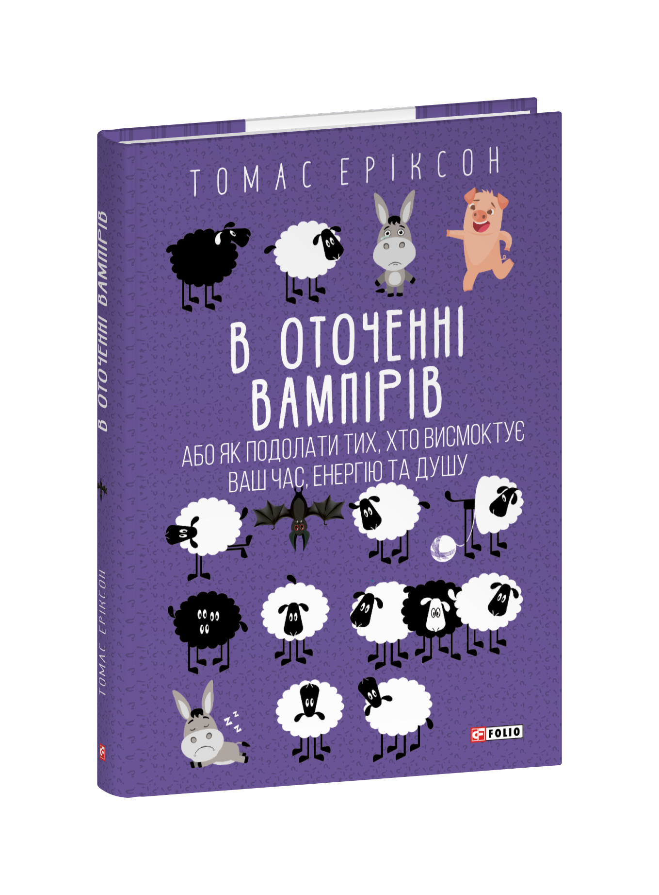

«Видавництво Фоліо» — одне з найбільших видавництв в Україні. Існує на книжковому ринку більш як 30 років, видає класичну та сучасну українську та перекладну літературу українською, англійською, німецькою, польською мовами.
Розробили та підготували до друку понад 100 книжкових серій різних жанрів та тематик. В це число входить серія книг про систему DISC, що нині налічує 6 книжок (не всі, на жаль, можна купити на даний момент).
| Назва книжки | Опис | Посилання | Фото книжки |
|---|---|---|---|
| В оточенні ідіотів | «В оточенні ідіотів» — бестселер 2015—2018 років. Томас Еріксон поділяє людей на чотири кольорові типи. Він описує логіку поведінки, темперамент, систему цінностей представників кожного з кольорів. Чому одних людей ми розуміємо з півслова, а інших не розуміємо взагалі? Чому дуже успішні люди інколи здаються нам ідіотами і психопатами? Як подивитися на себе очима інших людей і навчитися розуміти навіть тих, хто на нас абсолютно не схожий? Книга допомагає краще сприймати людей з різними типами поведінки й ефективно з ними спілкуватись і може стати настільною для керівників, психологів, менеджерів усіх рівнів. |
Купити |  |
| В оточенні іпсихопатів | Нова книга Томаса Еріксона дає відповіді на питання: що твориться в голові психопата і чим він відрізняється від інших людей; як «вирахувати» психопата; як захиститися від його маніпуляцій? Звичайно, не кожен психопат є божевільним серійним убивцею. Але більшість з них — серед нас: у вашому районі, на роботі або навіть у вашій родині. Настав час раз і назавжди дізнатися, як вони маніпулюють вами, — поки не стало надто пізно! | Купити |  |
| В оточенні негараздів | Бувають хвилини, коли ви відчуваєте, що навколо одні перешкоди. Все валиться, одне за одним. Вас охоплює відчуття безпорадності. Однак деякі люди вміють рухатись уперед, незважаючи на проблеми. Як це можливо? У чому їх секрет? Чому в таких ситуаціях вони не здаються, як усі інші? Нагадавши, що життя таке, як воно є, Еріксон допомагає вам зрозуміти, що насправді марно намагатися контролювати все, що відбувається навколо вас. Замість того, щоб нарікати, коли життя підкидає вам перешкоди, зосередьтеся на тому, як з ними впоратися. Книга «В оточенні негараздів» допоможе вам знайти метод, який підходить саме вам, і в рівній мірі розважить та надасть вам сил. | Купити |  |
| Мій бос-Ідіот | У книжці «Мій бос — ідіот» Еріксон поділяє начальство за способом їх керування, спілкування та поведінки на чотири кольорових типи — червоний, жовтий, зелений і синій. Він описує теорії та методи, за допомогою яких люди на своїх робочих місцях вибудовують функціональне діалогічне спілкування. Також ідеться й про те, як важко виконувати свою роботу, коли бос — ідіот. На прикладах докладно розглянуто погане керування, однак звертається увага й на те, що підлеглий може з цим зробити. | Купити |  |
| В оточенні нарцисів | «Трохи менше думати про себе й трохи більше один про одного — це шлях до справжнього успіху та щастя», — стверджує Еріксон. Автор припускає, що нарциси зосереджуються на собі «коштом усіх інших» і відчувають себе вище правил. Він каже, що соціальні медіа — це «родючий ґрунт» для «культурного нарцисизму», бо суспільство винагороджує таку нарцисичну поведінку, як розміщення фотографій свого обіду в соцмережах. Захоплива та практична книга «В оточенні нарцисів, або Як зупинити чуже Его, яке руйнує ваше життя» допоможе вам звільнитися від рабства чужих токсичних намірів, щоб ви могли жити щасливішим, повноціннішим та успішнішим життям. | Купити |  |
| В оточенні нарцисів | Чи є у вашому житті люди, після спілкування з якими ви стаєте знесиленими та виснаженими? Двадцять хвилин з цими людьми — і почуваєшся, ніби щойно пробіг марафон. Вони вимагають необмеженого часу, емоційної підтримки, уваги або схвалення. Ви боїтеся взаємодіяти з ними, але не знаєте, як це змінити? У новій книжці Томас Еріксон застосовує чотириколірний код поведінки, щоб передбачити реакцію різних типів на енергетичних вампірів. Автор пояснює вампірську сутність перфекціоністів, королев драми, хуліганів, пасивних агресорів, вічних жертв, нарцисів, скигліїв і всезнайок. За допомогою простих теорій стає легко ідентифікувати та нейтралізувати викрадачів енергії. Автор описує повсякденні ситуації, з якими ми стикаємося досить часто. Уявіть, якби ви могли бачити та виявляти попереджувальні знаки заздалегідь і знали, як уникати найгірших енергетичних втрат! Книга допомагає краще сприймати людей з різними типами поведінки й ефективно з ними спілкуватись. Рекомендовано для керівників, психологів, менеджерів усіх рівнів.. | Купити |  |